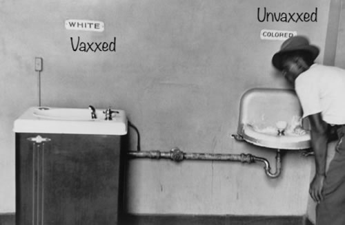

Shot of Clarity

I just had a shot of clarity and realized what's going on with my life.
Song is Why by Dominic Fike and it won't play on iPhones
Although ultimately I want Ali back, I'd be happy with any of the girls on /girls
She's also previously asked me not to use her name so I apologize for that and would like to approach her as a millionaire or not at all.
I'm about to get my car back so I was considering employment and Barrington Staffing was telling me to take off the coding stuff on my resume. I complied, but then I realized I want a coding job. I'm in sober living now, but when I was living on my own I got recruited by Google and Meta.
They had this online learning platform for Meta that I only solved 2 out of 20+ problems in preporation for my technical interview I ultimately failed. It was insanely stupid not to prepare better.
The problems are hard to tackle but I never even tried to solve them sober. I was getting high. I really need to be sober and try to prepare more for next time. The problem is now I'm on medication that makes it harder to learn and think in the way I need to be able to think. Another problem is I'd rather blog about the algorithms then work on them. Life is meant to be fun, you know?
I feel much better now that I know what I want, which is a new girlfriend and a coding job. I do miss my exes but I'd be satisfied by the new girl I'm preparing for. I also miss all my guy friends; any past acquantance I get joy from reconnecting with. Also, I don't need to get Google or Meta, I can start for a less demanding company but I'm going to use the Meta preporation materials to work on my craft.

Lately I had been feeling down because I realized how million-to-one it is for me to get Ali back but now I'm happy because life is a gift and women are my favorite.
My life is embarassing, and I crashed and burned into this current life situation, but I now remember just how close I was to an awesome career in coding, and I'm proud of this website and what I've accomplished. It's a cool case study on a man's life, and I get immense joy producing and consuming this website's content. It's a bonus when someone else likes it because I already do. I am free from social media and I still get the rush of posting stuff, even more so. I have total control here. I only use my instagram of maxjanndotcom to get more traffic to my site. I think instagram is a torture device, but it's my favorite one.
I want a Jr. Dev role and I also want to read the modern day philosopher Ryan Holiday's books; I just bought 'The Obstacle is the Way' and 'Stillness is the Key'. I was just listening to him today and he was talking about an approach to happiness where you simply want less, and then are at peace.
I'm proud of my philosophy degree. I love wisdom. I love life. I just need to stay sober, eventually get off of meds, and make good money as a programmer. Then my goals and my day to day life will align and I can be the type of man that can land the type of girl I want, which is a girl I find beautiful on the inside and out.
Song is Zeus by Eminem. I dug this hole I'm in. I take responsibility. I smoked too much weed. I played too much video games. I didn't study enough even when I was recruited. But I'm not dead yet, and I will continue to improve my skills until I can make a living coding. Strangely enough, I just watched a Rick and Morty episode where smoking weed and playing video games saved the day. Morty flew through Zeus with a spaceship and killed him which saved Rick. And when I was learning how to code at the coding dojo in Burbank I was on the 3rd floor of the building, and Rick and Morty was being made on the second floor. That floor was locked but if I was on the elevator with one of their employees I got to peek inside. Synchronicity doesn't stop there. I've also made philosophy videos talking about Zeus and Eminem has a song called Zeus I like right now. Rick is like a God in that show, and that's like a truth drop because we as humans can be like Gods if we believe in ourself and start manifesting our own reality. I think God would have helped me by now, so the most likely scenario is that we are like Gods who are creating the past and the future with the present moment. When I was in jail and helpless I decided God was either punishing me or incapable of saving me. I think God is within each of us. "Part of me is God" is a line from my song Add Vice for a Friend
I appreciate beautiful women, and if all I have is images I gravitate towards the best ones, but in real life I value the total package.
However, I've made it clear to the girl I was just seeing that I need to stop with her so I can be available for the next girl in my life because I know she wasn't the one for me.

I am thinking of moving to Texas where my Dad lives and then I can get a programming job and watch Deshaun Watson take the Browns to the super bowl with my Dad.
I wonder if I'll still do fantasy football this year

Eventually I would like /girls to include exclusive photos with girls that I take photos of, or pay someone to photograph them. I'd like to have a famous top 10 and have beautiful girls vying for my attention. That would be epic. That's a super long-term goal. For now I just steal images from the internet.
Song is Vampire by Dominic Fike
Gotta have a little fun with code sometimes, you know?
6.10.22
Love
When I was at Moorpark College fighting my way back into UCSC there were Christians that had a table set up for the students. They were passing out pamplets and talking about the dangers of premarital sex.
I went up to discuss it with them, as I usually do, and I tried to say how happy I was when I was having premarital sex with my first serious girlfriend in high school, and how it was so spectacular it couldn't have been a mistake.
"How'd that work out for you?" the man said. And I was taken aback. It's true, the sex was wonderful at the time, but the pain of losing her in college was enough so that I was seemingly permanently damaged by it. I had just failed out of UCSC and received this message at a time where it was painfully obvious I didn't know what I was talking about. Other people hadn't been missing out. "It is better to have loved and lost than to have never loved at all" is an expression I wrestle with. There I was, in agony, trying to argue for premarital sex.
That's when I realized I may have been wrong to not ask her to be my wife first. I went on to have a sleu of other beautiful women where premarital sex seems like a good idea but I really have to say I think the Christians might be right.
All my beautiful past girlfriends, Ali, Jess, Jessica, and Ashley, I miss each and every one of them so bad it hurts more than it felt good at the time.

Even the one night stands sting now more than they felt great at the time. I feel like part of my soul as been hocruxed off. [Harry Potter (Tom Riddle) reference]
I thought I was making the right choices but in retrospect I think the Christian way of life is the smartest way to go about sex, even though you don't get to test-drive the car, so to speak.
This Matrix clip to me takes me back to my first relationship with Ali. I know everything in this reality expects me and demands me to move on but I wish I had never let her go. I wish I had done a better job of keeping that first love. I don't know much about all this conspiracy mumbo jumbo, but the truth is I will always love Ali Kazen and I will do anything for her, but she's going to have to look me in the eye and ask me to stop trying before I do. Because I believe in the true love we had. And I'll respect her decision. If she agrees to meet with me and tells me I'm wrong and she doesn't love me anymore then I will stop, but I'll be ready for that moment and if I get rejected I'll be in a good position to get a different girlfriend. I'm tired of living the wrong way. Isn't it possible God knew this would happen and tried to warn me but I didn't listen?
In jail I wrote out a list of all the girls I love and miss so much.
But none of them compare to the love I have for Ali, because I chose her as the woman I wanted to lose my virginity to and I know I chose correctly. Is it too much to ask to see her one more time? Maybe it is. Am I going to ask anyway? Yes, because the only time I feel alive is when I'm living for her.
Shout out to Brenda, Karina (UCSC), Shaida, and all the Amandas. I love all my past flirts, like Julianne and Danielle M. And some girls I miss their personalities like Fefe. I miss you all. I'm here for you all. I just had to hop off social media because it can't handle me and my forceful emphasis.
"Moving on" is a mistake. I wish to reclaim all my past soul breaks. I don't like this game of getting older and "moving on". I want to reconnect. I just hungout with my childhood best friend Kyle for 1 hour and it was better than 1000 one night stands with perfect 10s. I am Voldemort meets Harry Potter, I am Elam Ahpla, the alpha male, telling you the God Blessed Truth.
God bless you all,
Elam
6.6.22
P.S. Shout out to the one night stand from the video game bar, and also the girl I once furiously made out with on the dance floor. Both of you reached out to me but I couldn't handle it.
Ladies, if you need my number I have a new phone and it's 805 940 5096
Asha to me means "Real Truth"
I got the word from one of my favorite youtube channels, "Asha Logos"
I named my music player "Logos"
You can't spell Matrix without Max and it sounds like a trick played on Max
Not to mention all the workout equipment I use at Gold's gym says Matrix on it.
Max and Tri could mean my trinity (Ali) or the holy Trinity
She's my other half, like the Story of Zeus splitting humans into male and female because he was threatened by our power when together.
And like when Neo tells Agent Smith his name is Neo, My name is Elam!
edited 6/7/22
Yeonmi Park - North Korean Survivor
I clicked on this youtube video because I follow Lex Fridman because he talks about Artificial Intelligence a lot. I had heard about a new woman leader in North Korea and I thought this might be her. That shows you my level of ignorance. This girl is actually a survivor who survived by getting sold into sexual slavery to china. Being a sex slave was a step up from north korea and she I guess was eventually able to escape and now she's on Lex's podcast sharing her story. It makes me almost tear up and it's really incredible to hear her story. It makes me want to do something about North Korea. I make a lot of noise about the lack of freedom in America but we have more freedom here than anywhere else in the world. I live an incredibly blessed life and want to help people from the atrocities of tyranny. I only criticize America because I view freedom and liberty as fragile and imperative to monitor. We must be vigilant and guard freedom. And we must liberate North Korea. She makes the point that it's more important than space travel and I agree. How can we not save all those people? It's embarrassing. Jeff Bezos and Bill Gates should be ashamed of themselves with all their agendas. This poor girl is angry that no brilliant minds have figured out a way how to end her people's suffering. Our military should be embarassed if we can't figure out a way to invade without letting them set off a nuke. We should laser beam their leaders from space and storm in there with water and food and rehabilitation programs of the kindest possible nature.

I spend too much time worrying about my place in the world and how people will think of me or if I'll ever find love again. But the truth is I'd be much happier if I could rescue these people and show them all the possibility life has. We should not allow these atrocities in North Korea to continue.
God Bless.
06/30/1991
Rand Paul
In my last video I explained how I don't trust or support Rand Paul, however, I'm still open-minded and I listened to a speech of his today that I think had a lot of good points. I guess if I had to align with a politician it would be him right now.
06/30/2021
Thus Spoke Elam
There's something about Mary analysis and philosophy of truthers vs. average men.
06/29/2021
The Last of Us Part II
I just beat this game again. Now I'm going to try it with permadeath, where death makes you restart the game. I'm actually doing "per chapter". You can do "per act" or "whole game" permadeath. I tried permadeath and died the first clicker I saw. I play on Grounded.
Right now I'm playing Resident Evil Village on Hard on my first playthrough. It's very challenging, and terrifying. I love it.
I'm also running a mile per day. It makes me feel a lot better when I play video games that I've already had my physical activity of the day. Today I only ran half a mile because I tried it at the highest speed on the treadmill that I've tried and it was too much. I'd say I've run at least .5 miles for a week straight. A total of 5 miles in a week.
06/24/2021
Self-Democracy
In this video I talk about Impulsive Guy, Responsible Guy, Creative Guy, Competitive Guy, Rational Guy, and who's the current president of my mind
06/21/21
Vax Pass!
You can't go to sporting events without showing your digital medical information. The videos about coronavirus on youtube or getting overwhelming amounts of dislikes. I think the people are fed up.
The dystopia is now. If you're wondering what the hell is going on I'm going to repost one of my favorite videos that explains everything.
06/21/21
New World Industries Game Demo
Demo of a game I'm currently developing.
06/20/21
The Turing Test

This Youtuber has reached out to me multiple times. His most recent comment was warning me about Quantum of Conscience but the comment has been mysteriously deleted. I viewed his latest video and it's blowing my mind. I knew this technology existed and I already posited that bots were on the internet posing as people in my whiteBloodCell video, but I didn't know it was out in the open like this on reddit.
I'm not done listening to it all yet but I'm willing to post it because it disagrees with my recent thoughts on QOC and I think it's cutting edge because it's addressing the views anomalies I recently brought up.
Alan Turing was a computer scientist who came up with a test to determine the sophistication of a computer. The test is simple. A human being interacts with a computer by text chat. If the human being cannot tell if it is a bot he is talking to, the test is passed. Well, ladies and gentlemen, the test has officially been passed with Open AI's GPT-2 or whatever. Turing said that when this test is passed, artificial intelligence has arrived.
GPT-2 can generate text posts and comments and pass as human.
06/19/21
Beast
I tried to post this farewell video to my other channel but I'm not even allowed to upload videos to my main account.
06/18/21
Return to 2000

Achieved my Goal of 1700, 1800, 1900, 2000 for bullet, blitz, rapid, and classical respectively.
06/18/21
Alright Alright Alright

Today is a special day. It is the day in between the day that California lifts the mask mandate for stores, and the day California lifts the mask mandate for workers.
Before I get into that, I want to share this video between Sadhguru and Matthew McConaughey. I have always enjoyed Sadhguru's philosophy. He is a happy guru capable of providing groundbreaking perspective shifts. Matthew is a terrific actor. His roles in Interstellar and True Detective are spectacular, and his philosophy and commencement speeches as himself are equally as tremendous.
The key point of this talk I want to highlight is when Sadhguru talks about "Selfishness". He says "Selflessness" is an illusion because we can only perceive from a sense of self. Even during ego death when I took salvia I was concerned primarily with who I was, my own powerlessness and lack of identity and fear.
He goes on to explain that selfishness must extend to all things. Instead of only caring about yourself but not others, he suggests you could extend your circle of selfishness to the whole planet or universe. Why not want what's best for all things?
The beauty of this generous selfishness and applying self-interest to all beings is that even when we have that benevolent goal we have a weighted ability to change ourselves more than another individual or system.
In other words, and this is my interpretation and extrapolation of what he said, The surest way to change the world is to change ourselves. We have more control over ourself than anything else, so the most efficient way to heal the world is to heal yourself. That's where we have influence.
Imagine a king of a country who's goal is to save endangered species. He could command conservation efforts in his own kingdom and his commands will be obeyed, or he could venture out into another land and try to save the animals there. When he goes to the other land, he is no longer King, his commands are ignored, and his impact is limited. The wise king would use his position as king in his kingdom to leverage his power in his domain to save the most animals.

You are the king of yourself. What you say ultimately goes when it comes to what you do with your life. I am the king of myself. It would be wise for me to concentrate my efforts where I have the most influence. By focusing on changing myself I can have the largest impact on the world because I am part of the world.
Special Priviledges for the Fully Vaccinated
Now, unfortunately I have to address this stupid issue. When the government lifts its petty mandates and restrictions for the "fully vaccinated" that is really just reverse discrimination of the "unvaccinated." Imagine a Martian king a million years ago on Mars. He has partial control, as a president. He is power hungry. The Martians have liberty, so he comes up with a plan to take it away.
- Create a Crisis
- Declare Emergency Powers
- Have Martian Celebreties paid to encourage the masses to obey
- Take away civil rights like the right to wear whatever you want on Mars
- Introduce a solution to the public for a way out on your terms
- Slowly grant the lost rights back to only those to obey with your plans
- Segregate out and socially cripple the Martians who do not comply
- Make it so the rebels have no viable way to thrive within your kindom, and reign
The way it would work on Earth in the biblical prophecy is:
- Take away buying power of citizens
- Give it back only to those who get the mark of the beast
- Make it impossible to resist your control.
By setting the standard of an "Honor System" to enforce the laws that say the fully vaxed doesn't have to live by the same rules as the unvaxxed... the implication of this is that someone unvaxxed, who doesn't wear a mask, is dishonorable. They're making a normal sovern being into a dishonorable lying contagious risk to society. Individual Sovergnty is their only enemy. They just disguise it as an attempt to secure public safety, as usual.
People in a free country should be allowed to be free! Think about this: Why is a non-vaccinated person not required to wear a red shirt that says "I am not vaccinated. Please stand 6 feet away for your own safety." What is preventing that order? Our Freedom? That didn't seem to stop what's happening now. If the non-vaxxed have to wear masks while the vaxxed don't, then by walking around with a mask people are announcing their private medical information. It's not far off from a government approved dress code shirt with large font saying "Stay Away, I may be asymptomatic".
Priviledges for the fully vaccinated == Discrimation of the non-vaccinated.
Having a water fountain for white people only, is the same thing as discrimating non-white people. I fully understand that this is all being done under the pretense of protection against the boogey man (infectious invisible virus). However, when tyranny comes, it tip-toes, and it doesn't tell you the truth of what it's doing. The date-rapist at the bar does not come up to you in the name of rape. He will lie and wait for the right moment to slip something into your drink. And we, Americans, are getting date-raped by the government.
06/16/2020
Joker
First Game with Diamond Crossbow and Sword - Insane Gameplay
06/11/21
Deadpool
New Gameplay of my Deadpool class in Call of Duty: Cold War. I use a crossbow and a sword and get 38 kills in a Team Deathmatch.
06/11/21
Fianchetto
In this video I show how to fianchetto your bishop like a pro
06/09/2021
10 Things You Hate About Me
In this video I share a list of 10 topics that my opinions on are beyond unpopular
06/07/2021
Get the Hell out of here!
Heaven is Optional

I view the Bible as required reading in the class of life.
It doesn't mean I want to read it, but it means I have to if I want to pass the class. I at least have to pay attention in class or read the cliff's notes. Otherwise, my teacher may not be so forgiving when I try to turn a 79 into a B- at the end of the schoolyear.
Any respectable atheist or agnostic intellectual will at least have a cursory understanding of the bible. So I watched this video. It talks about the general idea most people have about what Christians believe, vs. what the bible actaully says. I think this guy does a really good job at humbling himself and acknowledging that the story of the bible is much more complex than the ways people have tried boiling it down.
He draws on a chalkboard a diagram that shows a person living their life on the way to a verdict of either heaven or hell, which is the popular consensus of what people think Christians believe, and then he dismantles that argument.
Although there are some parts of the bible that mention seperating the wheat from the tares, Jesus says on Earth, "Repent. The Kingdom of Heaven is at hand". In other words, Jesus says Heaven is on Earth with him at that moment. They overlap.
Then this guy uses a ven diagram in a video to illustrate that concept. What I want to talk about is his analysis of Jesus as a physician.
We as people may detest child molestors and villians of that sort, however, we try to catch them in the act, or after the fact, and throw them behind bars to physically prevent them from hurting others.
Jesus, however, tries to address the root of the problem. Lust. It is the desire to exploit others for one's own pleasure that creates the problem in the first place. We have a society where we have largely agreed we should let children turn 18 before we can engage in acts that bring ourselves pleasure. The crime is that some people are not willing to wait for the sake of the mental health of the child. Some people are lustful to the point where it doesn't matter how it affects the object of their lust. They just want pleasure for themselves.
Lust itself is the root issue. If there was no lust in the hearts of men, no underage girls would be in danger of someone violating them at a young age. The men would simply wait until they were old enough.
So the incredibly evil systems of child trafficking or sex trafficing of any kind spawns from the seeds of lust in the average man. Because without the lust inside of us, none of that evil would be possible.

Even if we put the rapist behind bars, the problem remains strong if he still wants to rape. If the Joker breaks into Arkham Asylum and lets all the criminals loose on Gotham, all that truly matters is the hearts and minds of those men. If those men have all found Jesus and rid themselves of their lustful ways then they aren't a menace to society or Gotham City. If they still feel the same way, then they are a menace. So I love the idea of Jesus attacking the root of the problem, and seeing how these evil inklings exist in all of us. Some are just more out of balance than others.
And if someone has themselves been abused as a child, they may be more willing to abuse another child later on because in a twisted sense, why should they get to hold onto their virginity when I didn't get to? Why should I respect their rights to their bodies when my own rights were trampled? It's like burning someone else's toy car because yours was burnt and you can't bear the sight of someone else getting to play with a toy car when you lost yours. I don't know. I was never abused, but that's just a theory.
So anyway, Jesus recognized that the evil deeds eventually done are spawned from very basic roots of evil. Jesus brought heaven to earth and kicked out the hell. That's why he constantly cast demons out of people. The idea is that Earth has Heaven and Hell overlays, and your hellish reality can be cured by Jesus. Also, God created Heavens and the Earth, but it was Man that perhaps participated in the creation of Hell.
Heaven has to be optional. Otherwise, it isn't heaven. See, a party that you HAVE to go to is no fun. A party is only fun if you get to choose to go or not, and it's especially fun if you were specifically invited, or even helped plan it. Trust me, I know a thing or two about parties.
When I say "Get the hell out of here!" I mean it literally. I don't mean you should leave. I mean you should take the hell in your life caused by sin, and get it out of here with the help of Jesus who can cast out the demons in your heart. It was us, human beings, that killed Jews in Nazi Germany. It was us, human beings, that abused black people in slavery. And it was us, human beings, who abused children by the thousands. It was us who killed Jesus Christ. One of my favorite quotes by Jonathan Adampants that made me buy into him so much is when he said, quoting Jesus, " "Forgive them for they know not what they do." Why do you think you didin't know what you were doing?" Adampants in that quote is implying that you yourself now are guilty of the same sin that killed God himself in the flesh. Staggeringly brilliant delivery of the most important truth. It is us, that is the problem. We all possess all the "sparks" necessary for something like child trafficking to become a thing. It's not a few rogue sickos, it's systemic. We all have within us the desire to exploit others for our own personal pleasure, and that's just the worst intantiation of that fundamental sin.
I myself watch porn. If I didn't have lust in my heart, I wouldn't watch it. If I didn't watch it, it wouldn't get made. If everyone stopped watching porn, there would be less incentive to make it. Then girls lives wouldn't be exploited. Maybe some like porn but there are plenty of girls that would be better off without that industry in my opinion. Even men would be better off. My point is, I participate in it. I fan the flames of lust and help grow it into it's worst instantiations like trafficking.
My sins are abundant, rampant, disgusting. But at least I do the required reading, so when I have a failing grade towards the end of the semester, I can go in on my lunch and beg the teacher for some extra credit. And luckily for us, our teacher is merciful.
06/04/2021
End of Month